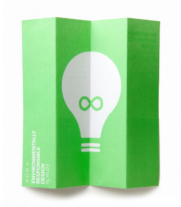
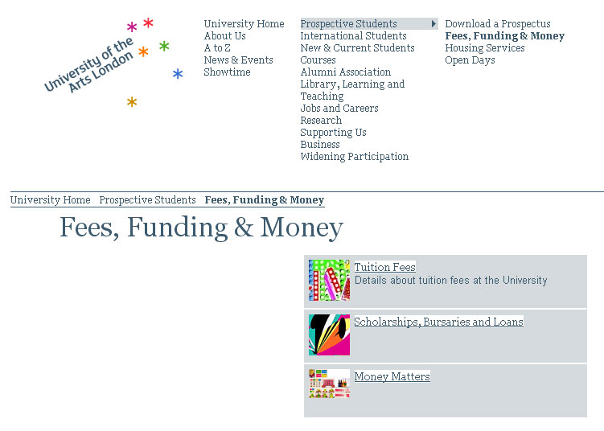

L'università:
University of arts London raggruppa sei diverse facoltà artistiche di Londra. Il sito principale fa da contenitore-vetrina per ognuna delle facoltà e fornisce informazioni comuni ad ogni indirizzo.
Layout e menu:
Il layout è molto semplice e smembra la pagina in due macro aree: l'header che contiene il menu di navigazione e un area principle con i contenuti relativi alla sezione consultata al momento che continua sotto la piega della pagina.
I contenuti sono strutturati in modo chiaro ed è semplice trovare quello che si sta cercando;
Inoltre, grazie alla conformazione dell'header, è sempre abbastanza chiaro in quale area del sito stiamo navigando.
Corsi:
Ogni corso ha un sito personale più dettagliato al quale punta il suo link nel sito principale "University of arts London"
Il sito non risulta così troppo dispersivo e sovraccarico di contenuto